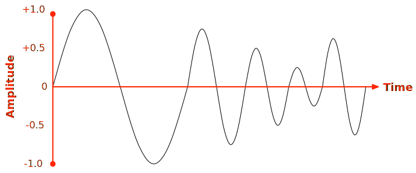

Representing audio in digital form involves a number of steps and processes, with multiple formats available both for the raw audio and the encoded or compressed audio which is actually used on the web. This guide is an overview examining how audio is represented digitally, and how codecs are used to encode and decode audio for use on the web.
Audio is an inherently analog feature of the natural world. As an object vibrates, it causes the molecules surrounding it to vibrate as well. These molecules affect the ones adjacent to them, and so forth, propagating the vibration in the form of a wave outward from the source until the amplitude of the wave (its volume) fades away with distance. The granularity of an audio wave in the real world, then, is that of an individual molecule of the medium through which the sound wave is traveling.
On Earth, the medium most audio travels through is the air. Some audio does travel through water, or even through the rock comprising the planet itself (if you've ever heard the rumble or boom of an earthquake, you've experienced this phenomenon), but nearly all of the sounds you hear every day travel to your ears through the air.
The sounds a person hears every day are, then, actually vibrations in the air which cause the inner workings of the ear. The farther the air molecules move with each pulse of the wave, the higher the amplitude of the wave, and the louder the sound is. The faster the molecules vibrate, the higher the frequency of the wave.
The higher the amplitude (height) of the wave, the louder the sound is at that instant. The shorter the wavelength (the closer together the crests of the wave are), the higher the frequency (or pitch) of the sound that's produced.

Computers, however, are digital. In order to represent a sound wave in a way computers can manipulate and work with (let alone transmit over a network), the sound has to be converted into a digital form. This process is called analog to digital conversion (A/D for short).
The first factor affecting the fidelity of the captured audio is the audio bandwidth; that is, the range of audio frequencies the A/D converter is capable of capturing and converting into digital form. The audio bandwidth is also affected by the codec, if it chooses to discard any frequency bands while encoding the sound.
Sound enters the computer through a microphone or other input in the form of a stream of electrons whose voltage varies to represent the amplitude of the sound wave. This analog signal is then converted into digital form by a circuit that captures the incoming wave's amplitude at regular intervals, converting that data into a number in a form that is understood by the audio recording system. Each of these captured moments is a sample. By chaining all the samples together, you can approximately represent the original wave, as seen in the diagram below.
In this example, the blue line represents the samples taken from the audio waveform, which is black. At regular intervals, the A/D converter circuitry reads the voltage of the signal as a value between (in this case) -1.0 and +1.0. Since the amplitude varies over the duration of that time slice, the A/D converter must choose a value to represent that slice, whether by taking the value at a particular moment (in the diagram above, the midpoint of each slice is used as the value), or by averaging the amplitude over the duration of each sample. Those sample values are then recorded as the amplitude of the waveform at that time.
When it comes time to play back that sound later, these amplitudes are used to generate an approximation of the original waveform; instead of playing back an exact duplicate of the original, smooth wave, the rougher, blue wave is played.
The more often you take samples of the original audio, the closer to the original you can get. The number of samples taken per second is called the sample rate. Consider the wave above, and how much different the blue, digital wave would look if you took samples twice as often. Or ten times as often. The more samples you take, the smoother the wave becomes.
At the most basic level, audio is represented by a stream of samples, each specifying the amplitude of the audio waveform as measured for a given slice of the overall waveform of the audio signal. There are several formats used for the individual samples within an audio file. Most audio files use 16-bit signed integers for each sample, but others use 32-bit floating-point values or 24-bit or 32-bit integers. Some older audio file formats—which you won't find in use on the web—used 8-bit integer samples. In addition, samples may use signed or unsigned values, as well. The size of an individual sample is called the sample size.
The position of each audio source within the audio signal is called a channel. Each channel contains a sample indicating the amplitude of the audio being produced by that source at a given moment in time. For instance, in stereo sound, there are two audio sources: one speaker on the left, and one on the right. Each of these is represented by one channel, and the number of channels contained in the audio signal is called the channel count.
While recording or generating multi-channel audio files, the channels are assembled into a series of audio frames, each consisting of one sample for each of the audio's channels. An individual sample is a numeric value representing the amplitude of the sound {{interwiki("wikipedia", "waveform")}} at a single moment in time, and may be represented in various formats.
Stereo audio is probably the most commonly used channel arrangement in web audio, and 16-bit samples are used for the majority of day-to-day audio in use today. For 16-bit stereo audio, each sample taken from the analog signal is recorded as two 16-bit integers, one for the left channel and one for the right. That means each sample requires 32 bits of memory. At the common sample rate of 48 kHz (48,000 samples per second), this means each second of audio occupies 192 kB of memory. Therefore, a typical three-minute song requires about 34.5 MB of memory. That's a lot of storage, but worse, it's an insane amount of network bandwidth to use for a relatively short piece of audio. That's why most digital audio is compressed.
The process of compressing and decompressing audio is performed by encoding and decoding it using an audio {{Glossary("codec")}} (COder/DEcoder). Over the years, a large variety of codecs have been developed, several of which are commonly used on the web. For details about the most important and useful ones for web developers to be familiar with, see the article Guide to audio codecs used on the web.
There are two types of audio channel. Standard audio channels are used to present the majority of the audible sound. The sound for the left and right main channels, as well as all of your surround sound speakers (center, left and right rear, left and right sides, ceiling channels, and so forth) are all standard audio channels. Special Low Frequency Enhancement (LFE) channels provide the signal for special speakers designed to produce the low frequency sounds and vibration to create a visceral sensation when listening to the audio. The LFE channels typically drive subwoofers and similar devices.
Monophonic audio has one channel, stereo sound has two channels, 5.1 surround sound has 6 channels (five standard and one LFE), and so forth. Each audio frame is a data record that contains the samples for all of the channels available in an audio signal. The size of an audio frame is calculated by multiplying the sample size in bytes by the number of channels, so a single frame of stereo 16-bit audio is 4 bytes long and a single frame of 5.1 floating-point audio is 24 (4 bytes per sample multiplied by 6 channels).
It's worth noting that some codecs will actually separate the left and right channels, storing them in separate blocks within their data structure. However, an audio frame is always comprised of all of the data for all available channels.
The number of frames that comprise a single second of audio varies depending on the sample rate used when recording the sound. Since the sample rate corresponds to the number of "slices" a sound wave is divided into for each second of time, it's sometimes thought of as a frequency (in the sense that it's a description of something that repeats periodically, not in terms of actual audio frequency), and the samples per second measurement therefore uses the {{interwiki("wikipedia", "Hertz")}} as its unit.
The most common sample rates are:
There is a reason why 44.1 kHz is considered the minimum "high fidelity" sampling rate. The {{interwiki("wikipedia", "Nyquist-Shannon sampling theorem")}} dictates that to reproduce a sound accurately, it must be sampled at twice the rate of the sound's frequency. Since the range of human hearing is from around 20 Hz to 20,000 Hz, reproducing the highest-pitched sounds people can generally hear requires a sample rate of more than 40,000 Hz.
To provide additional room for a {{interwiki("wikipedia", "low-pass filter")}} in order to avoid distortion caused by {{interwiki("wikipedia", "aliasing")}}, an additional 2.05 kHz {{interwiki("wikipedia", "transition band")}} is added to the pre-sampling frequency (resulting in 22,050 Hz). Doubling that per the Nyquist theorem results in a final minimum frequency of (you guessed it) 44.1 kHz.
High-resolution (96 kHz) audio is used in some high-end audio systems, and it and ultra-high resolution (192 kHz) audio are useful for audio mastering, where you need as much quality as possible while manipulating and editing the sound before downsampling to the sample rate you will use for the final product. This is similar to how photographers will use high resolution images for editing and compositing before presenting the customer with a JPEG suitable for use on a web site.
Once you know the size of a single audio frame and how many frames per second make up your audio data, you can easily calculate how much space the raw sound data itself will occupy (and therefore how much bandwidth it would consume on a network).
For example, consider a stereo audio clip (that is, two audio channels) with a sample size of 16 bits (2 bytes), recorded at 48 kHz:
At 192 kBps, lower-end networks are already going to be strained just by a single audio stream playing. If the network is also doing other things, the problem strikes even on higher bandwidth networks. With so much competition for network capacity, especially on slower networks, this amount of data may be too much to viably transmit during any kind of real-time applications.
To solve this problem, the audio must be made smaller using compression.
Network bandwidth is obviously not the same thing as audio bandwidth, which is discussed in {{anch("Sampling audio")}}, above.
Unlike text and many other kinds of data, audio data tends to be noisy, meaning the data rarely consists of a series of exactly repeated bytes or byte sequences. As a result, audio data is difficult to compress using traditional algorithms such as those used by generral-purpose tools like zip, which usually work by replacing repeating sequences of data with a shorthand representation.
There are several techniques which can be applied when compressing audio. Most codecs use a combination of these, and may use other techniques as well.
The simplest thing you can do is to apply a filter that removes hiss and quiet sounds, converting any quiet sections into silence and smoothing out the signal. This can produce stretches of silence as well as other repeating or nearly repeating signals that can be shortened.
You can apply a filter that narrows the audio bandwidth, removing any audio frequencies that you don't care about. This is especially useful for voice-only audio signals. Doing this removes data, making the resulting signal more likely to be easy to compress.
If you know what kind of audio you're most likely to handle, you can potentially find special filtering techniques applicable specifically to that kind of sound, that will optimize the encoding.
The most commonly-used compression methods for audio apply the science of {{interwiki("wikipedia", "psychoacoustics")}}. This is the science that studies how humans percieve sound, and what parts of the audio frequencies we hear are most important to how we respond to those sounds, given the context and content of the sound. Factors such as the ability to sense the change in frequency of a sound, the overall range of human hearing versus the frequencies of the audio signal, audio localization, and so forth all can be considered by a codec.
By using a sound (no pun intended) understanding of psychoacoustics, it's possible to design a compression method that will minimize the compressed size of the audio while maximizing the perceived fidelity of the sound. An algorithm employing psychoacoustics may use any of the techniques mentioned here, and will almost certainly apply others as well.
All of this means there is a fundamental question that has to be asked and answered before choosing a codec: Given the content of the sound, the usage context, and the target audience, is it acceptable to lose some degree of audio fidelity, and if so, how much; or is it necessary that, upon decoding the data, the result be identical to the source audio?
If loss of detail and potentially fidelity is unacceptable or undesirable, a lossless codec is preferred. On the other hand, if some degree of reduction of audio fidelity is okay, a lossy codec can be used. Generally, lossy compression results in significantly smaller output than lossless compression methods; also, many lossy codecs are excellent, with the loss in quality and detail being difficult or even impossible for the average listener to discern.
While a high-quality lossy compression algorithm's effect on sound quality may be difficult for the average person to detect, certain people have exceptionally good hearing, or are particularly adept at noticing the kinds of changes introduced to music by lossy compression techniques.
The majority of audio codecs use some form of lossy compression, because of the better compression ratio those algorithms offer. Whereas lossless compression algorithms usually manage no better than a 40-50% of the size of the original, uncompressed sound data, modern lossy compression algorithms can reduce the size of the audio to between 5-20% of the original size, depending on the complexity of the audio. The vastly superior compression ratios possible with lossy compression usually make it a compelling choice, and adequate or excellent audio quality is possible with well-chosen codec configurations.
Researchers are continuing to devise better ways to analyze and compress audio, so new formats come out periodically that offer various improvements, either in compression ratio or audio fidelity (or both).
Use cases for lossless audio include scenarios such as:
Factors that may recommend the use of lossy compression include:
Diving into the details of psychoacoustics and how audio compression works is far beyond the scope of this article, but it is useful to have a general idea of how audio gets compressed by common algorithms can help understand and make better decisions about audio codec selection.
Lossy compression algorithms generally use psychoacoustics to determine which components of an audio waveform can be lost or subdued in some way that can improve compression ratios while minimizing the audible effect for the target listeners. By manipulating the waveform to make it easier to compress, or by removing components of the sound that aren't really heard, the waveform becomes simpler, resulting in data which has more consistency and is therefore easier to compress. Restricting the audio bandwidth to include only the frequencies most important to how the human ear will interpret the decoded sound can also improve compression factors.
The type of content being encoded can affect the choice of codec. In particular, the waveform for music is almost always more complex than that of an audio sample that contains only human voices. In addition, the human voice uses a small portion of the range of audio frequencies the human ear can detect.
Telephone networks, which were originally designed specifically to transmit human voices, can only carry audio (or any other kind of signal) in the frequency band from 300 Hz to 3,000 Hz. This doesn't quite cover the entire range of human speech at the low end, but enough of the waveform is available that the human ear and brain compensate easily. This also means that humans are generally acclimated to hearing speech constrainted to so narrow an audio bandwidth.
Human speech uses a relatively narrow frequency band (around 300 Hz to 18,000 Hz, though the exact range varies from person to person due to factors including gender). In addition, the vast majority of human speech sounds tend to lie between 500 Hz and 3,000 Hz or so, making it possible to drop substantial portions of the overall waveform without compromising the listener's ability to understand the words being said. You can even adjust the audio bandwidth to factor in the pitch of the individual speaker's voice.
Because of all these factors, and because speech waveforms are typically less complex than music, high (and more specifically "high enough") fidelity reproduction of speech can be achieved at a relatively low bit rate.
When a compression algorithm designed to compress general audio analyzes an audio waveform, it can discard anything outside the range of human hearing (or possibly even more, depending on how willing the algorithm is willing to risk losing detail at the high and/or low end of the frequency band. That means that the codec can discard audio whose frequency is lower than about 20 Hz or higher than about 20,000 Hz (20 kHz). This narrows the audio bandwidth of the sound, thereby reducing the amoung of data required to represent the signal in its compressed form. The audio bandwidth can't be reduced nearly as much as for a speech-only codec, but it is still a helpful start.
Some people can hear outside this range to some extent. More often, people's ability to hear higher frequencies is rather lower than this; in particular, it's worth noting that by middle age, the high end of that frequency range usually falls from 20 kHz down to around 12 kHz to 14 kHz. This suggests that the higher frequencies can often be discarded without overly affecting comprehensibility of the sound, so you can substantially reduce how much of the audio space you need to retain, thereby making your sound simpler and easier to compress.
This is portrayed in the diagram below. The diagram compares the frequency range of human hearing (green) to the frequency range of human speech (red) and the range of frequencies in which the majority of human vocalizations lie (yellow).

The large differences among these ranges gives us room to lose details in audio data without significantly impacting the ability of the human ear to notice any real change in audio quality. These facts can be taken advantage of when compressing audio.
On top of simplifying the sound through psychoacoustic analysis, codecs use other algorithms and transforms to further simplify and reduce the size of the audio. If you'd like to learn more about the way compression works on audio, take a look at {{interwiki("wikipedia", "Data compression#Audio", "Audio data compression")}} on Wikipedia.
Importantly, codecs do all the hard work for you. It's why so much engineering and scientific study goes into the creation of new algorithms and codecs. All you need to do is consider the options and your use case, then choose the appropriate codec for your needs.
For a more detailed guide to choosing audio codecs, see {{SectionOnPage("/en-US/docs/Web/Media/Formats/Audio_codecs", "Choosing a codec")}}.
Lossless encoders have a lot less room to manipulate the audio to improve the compression rate, given the need to be able to reproduce the original audio, which limits the number of options available to configure these encoders. The options tend to revolve around choosing the method by which the encoder performs the encoding and how much time and processor power it's allowed to consume in order to do so.
These parameters vary depending on the codec, but can include:
Most codecs have input values you can tune to optimize the compression in various ways, either for size or for quality. When using a lossy encoder, the higher the quality, the larger the encoded audio will be. Because of this, most options affect both quality and size in some manner.
You will need to refer to the documentation for the encoding software you use to determine which options are available, which will depend on the codec and the encoding software itself. Some codecs have a number of values you can adjust (some of which may require a deep understanding of both psychoacoustics and of the codec's algorithms), and others offer a simple "quality" parameter you can set, which automatically adjusts various properties of the algorithm.
There are two mutually-exclusive ways to control the quality of the compressed audio using the bit rate. The first involves targeting an average bit rate for the encoded data, while the second involves specifying a constant quality value to target while allowing the bit rate to vary.
The first method for controlling the quality of the output file is to specify the Average Bit Rate (ABR) to target when encoding the audio. The encoder will attempt to produce an encoded sound file that, when playing it back, uses, on average, the specified number of bits for each second of audio. This controls quality from the perspective of the encoded audio size; the higher the bit rate, the higher the resulting audio quality will be. The quality of the audio will fluctuate over time as needed in order to meet the targeted bit rate.
Somewhat similar to ABR is CBR (Constant Bit Rate). Where ABR attempts to keep the bit rate on average at a given level, while allowing some fluctuation, CBR uses an actually fixed bit rate for the duration of the audio. CBR is primarily used in codecs designed for voice-only purposes, where the frequency range and variation tends to be minimal, allowing CBR encoding to work without unworkable fluctuations in audio quality.
Variable Bit Rate (VBR) encoding works by accepting as an input into the encoder a constant quality setting. This indicates a quality level to maintain for the duration of the audio, allowing the bit rate to fluctuate as needed to achieve that quality level. In portions of the sound where compression is easily achieved with minimum impact to quality, the bit rate may be very low, while in areas where compression is more complex, the bit rate will be higher.
Some codecs allow you to configure the audio frequency bandwidth directly, either by specifying the range of frequencies to allow, by establishing upper and/or lower frequency limits, or by specifying an audio source type that determines how to configure the algorithm based on the expected frequency use of the incoming signal.
In addition, some codecs support special limited frequency bandwidth channels, such as the LFE channel, which inherently limit the frequency range available. In the case of LFE, the audio frequency bandwidth is limited to a frequency range suitable for use by a subwoofer or similar audio experience enhancement device.
Some codecs offer special profiles which are specifically intended for particular usage scenarios, such as VoIP; these profiles may also include by default restrictions to the audio frequency bandwidth.
Normally, stereo sound is represented by audio frames which contain one sample per channel. This results in audio frames which require 2⨉sampleSize bits each, where sampleSize is the number of bits each audio sample takes. Therefore, for a 16-bit stereo audio recording, each sample uses 2⨉16 or 32 bits of space. This is standard left/right (L/R) stereo or simple stereo.
Joint stereo is a method of storing stereo audio samples in a more space-efficient manner by taking into account that usually the sound entering each ear is similar. Thus, rather than storing every bit of each channel's sample, a base amplitude and a per-channel amplitude deviation value are stored, wherein the deviation value may use fewer bits than a complete sample.
There are two types of joint stereo: mid-side and intensity. Over the duration of an audio file, the encoder may change which format is being used to represent the stereo signal over the course of the audio file.
Mid-side stereo coding (MS) works by recording frames that contain a fundamental mid channel, which is the average amplitude of the original left and right audio channels. This is essentially what you would calculate as the amplitude when converting a stereo signal into mono. Then you store the side channel value; this value is a number which can be added to the mid channel value to determine left channel's original amplitude, and subtracted from the mid channel value to compute the right channel's original value.
In other words, given a left channel, L, and a right channel, R, you perform the following calculations when encoding a sample:
Then you store the values of mid and side. While mid is still the same size as your sample size (such as 16 bits), the value of side can probably be stored in a smaller number of bits, since the amplitude of the two channels is probably relatively similar. The encoder can then take this smaller number of total bits per frame and perform additional computations to further reduce the size.
While decoding the audio, the absolute left and right channel values are calculated like this:
On its own, mid-side stereo coding is lossless, and is commonly used by both lossless and lossy audio codecs. Any loss of detail comes from other steps of the encoding process.
Intensity stereo coding reduces the encoded audio bit rate by taking advantage of the way humans determine the location of sounds in space; this is called {{interwiki("wikipedia", "sound localization")}}. We hear in stereo because our ears detect a sound at different times depending on where the sound is coming from.
This is because our ears are separated by several inches, thanks to being on opposite sides of our heads. A sound coming from our right will arrive at our right ear before it arrives at our left ear. Our brains determine where the sound is in the space around us by using that time difference to figure out the angle from which the sound is coming. However, as the frequency of the audio signal goes up, the wavelength goes up as well. Eventually, the wavelength approaches then exceeds the distance between the ears, and it becomes difficult or impossible to unambiguously localize the sound.
Armed with this information, we can approximately represent a stereo audio signal by merging the frequencies that aren't used to determine directionality into a single channel, then include information that indicates the directionality of the sound. This requires fewer bits to represent, but is inherently somewhat lossy.